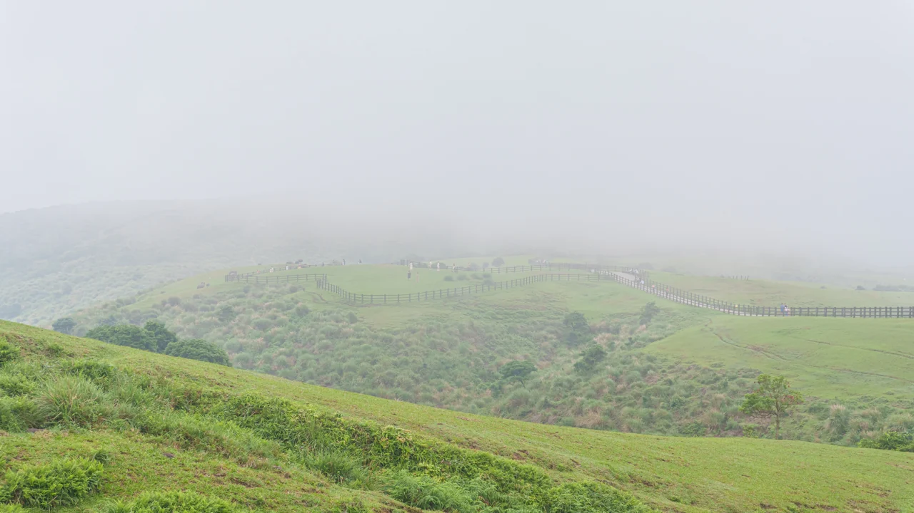
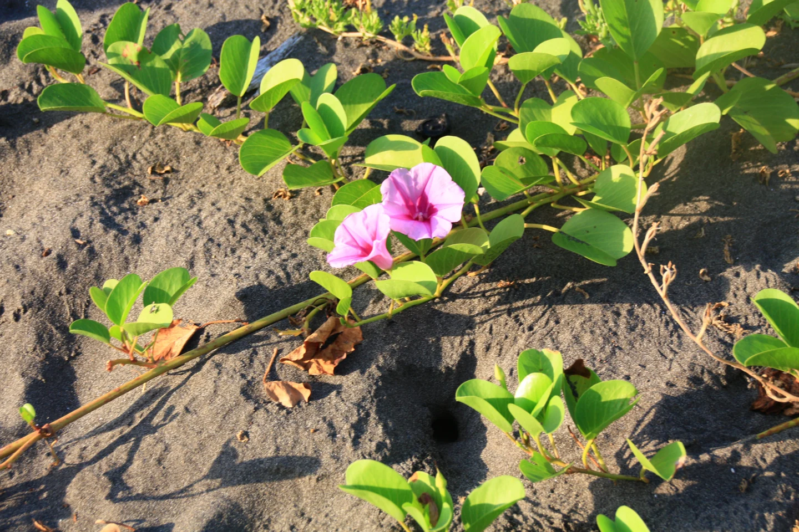

強風吹過草坡和沙丘，植物怎麼站穩？
草原與沙丘
擎天崗有開闊草坡，海岸則有鬆散沙丘。兩種地景都沒有高大的樹遮蔽，但植物要站穩，面對的地面並不相同。


馬鞍藤怎麼抓住鬆沙？
沙丘的沙會移動，雨水也容易往下滲。馬鞍藤把莖貼著地面伸出去，沿途在長葉的位置扎根，讓植株在多個位置抓住沙地。

蒹瑜 · CC0 1.0 · 本站縮圖

莖要站穩，種子要散開
貼地的莖向外延伸
莖的多個位置都能扎根
留在原地與移往別處，是不同的生存問題。馬鞍藤的莖靠扎根固定；濱刺麥成熟的果實聚成帶刺球團，則能在沙地上滾動，把種子帶往別處。
開闊草原
空曠、日照直接。不同地點的草地，可能同時受到風勢、土壤或過往放牧等因素影響。
植物陽明山部分坡地有芒草，秋末可見白色的穗；較平緩的草地則可能由矮草鋪滿。
動物擎天崗的小雲雀會在空中鳴唱，家燕、洋燕等鳥則會在草地上方捕捉飛蟲。
鬆沙裡，誰把地面變成陷阱？
海風帶來鹽分，沙面會移動，雨水也容易流失。除了植物，鬆沙裡也藏著動物的生活空間。
蟻獅有些蟻蛉的幼蟲會在乾燥鬆砂挖漏斗狀陷阱，等小昆蟲滑進來。
同樣是鬆沙，對植物是固定身體的挑戰，對這些幼蟲卻能成為捕食工具。
想一想
回想馬鞍藤沿途扎根的方式：如果一小段沙被吹走，其他位置的根還能做什麼？
沙面被風吹動時，貼地莖沿途長根有什麼好處？
比起只靠一個位置固定，沿途扎根能在多處抓住沙地，莖也可以逐段往外延伸。
資料來源
教材｜《高中基礎生物（下）》6-3，頁 144–146